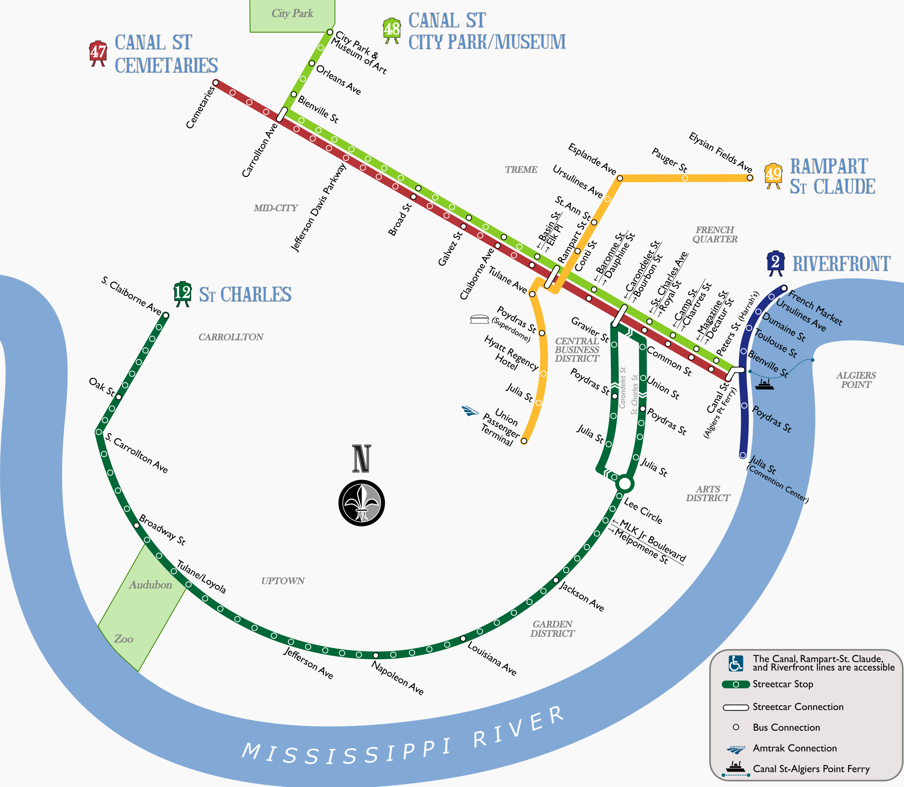

When I lived in San Diego, I was not yet enlightened. Despite living in Gaslamp and working at SWRMC (next to the Pacific Fleet stop), I drove to work every day--Uncle Sam was willing to give me a car and free parking right outside my office, but not a transit pass ¯\_(ツ)_/¯. The existing MTS map features lots of awkward angles and no geographical context, and with the Mid-Coast Trolley extension opening soon(ish) they're going to need a new map anyway. I tried to move away from the current angular setup in favor of more languid curves, and added in a simplified coastline.
While working on potential operating plans for a new east-west express line, I needed some graphics to show various potential stopping patterns. Rather than try to re-shape the current map to show service along Tasman, I ended up building my own from scratch, and then expanding it to include the entire system. If given free reign I'd probably make more changes, but I needed to keep things as similar as possible to the existing diagram.
In my dreams, Metra is a world-class regional rail operator. The reality is less thrilling. The current map is frankly disappointing, and I wanted to do something about it. Remap Metra was my attempt--click through for the whole thing and a write-up of my process. There are lots of faults with it (irregular angles, geographies that need to be compressed), and I'd like to do a v2.0 at some point. In the meantime, I think this version gets at a lot of what I had in my mind.
When I started my work on the DART Cotton Belt Line, I needed to familiarize myself with Dallas transit. Neither the DART Light Rail diagram nor the Cotton Belt-specific maps didn't show the connections to the rest of the Metroplex. So I sketched this out and stuck it in my notebook for reference.

Confession: I've never been to New Orleans. But in doing some research for the 2019 LRT Conference, I saw that NORTA's streetcar maps were either out of date (still showing the Rampart-St Claude line as UPT-Loyola) or were separated into pieces (i.e. a separate line diagram for the St. Charles Line from the rest of the system). So I made a new one.
